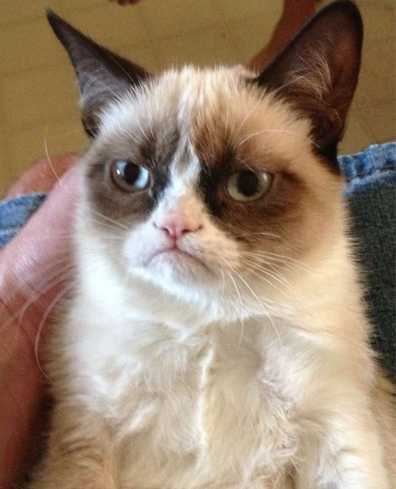

Impact of Memes
Through their pervasive presence across social media platforms, memes have the ability to shape public opinion, influence societal norms, and propagate ideas with remarkable speed and efficiency. However, the rapid dissemination of memes also pose challenges, as misinformation and propaganda can easily spread under the guise of humor. The viral nature of memes can sometimes oversimplify complex issues or perpetuate harmful stereotypes, leading to unintended consequences. However, Despite the concerns, the impact of memes on contemporary culture cannot be overstated. They reflect the collective consciousness of the digital age, serving as mirrors to our society's values, anxities, and aspirations. As we continue to navigate the ever-evolving landscape of online communication, memes will undoubtedly remain a potent force, shaping the way we perceive and engage with the world around us.
Here are some examples showing how memes changed the way we express ourselves:
Roll Safe - This meme, featuring a man shrugging and smiling, is often used to express indifference or a don't care-attitude. It originated in 2015 and has been used to express a variety of nonchalant reactions.
Bad Luck Brian - This meme features a young man with braces and an awkward expression. It's used to express misfortune, bad luck, or social awkwardness.
Grumpy Cat - This meme featuring a perpetually grumpy-looking cat took the internet by storm in 2012. It's used to express disapproval, frustration, or simply a grumpy mood.
Woman Yelling at a Cat - This meme, featuring a woman yelling at a confused- looking cat at a dinner table, is often used to express disapproval or frustration. It originated in 2018 and has been used to express all sorts of negative emotions.